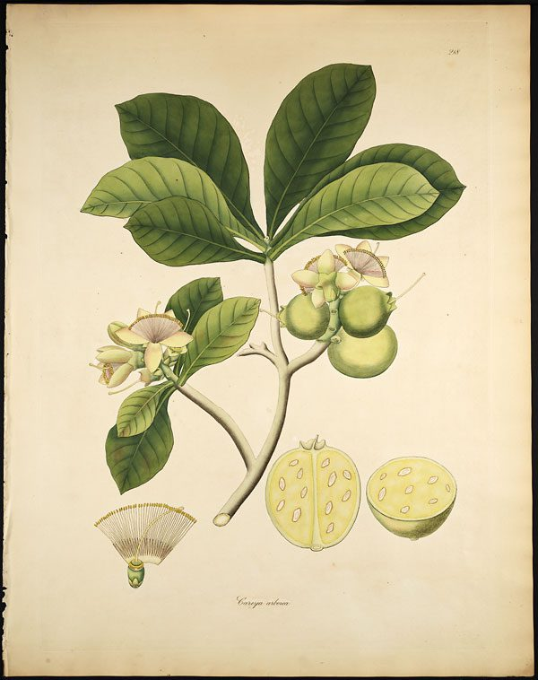

कुंभीWild Guava
Careya arborea · Lecythidaceae · FLR-0313

- Scientific name वैज्ञानिक नाम
- Careya arborea Roxb.
- Family कुल
- Lecythidaceae
- Hindi हिंदी
- कुंभी
- Local names स्थानीय नाम
- kumbhi, wild guava, kumbi, slow match tree
- Status here यहाँ की स्थिति
- native
- Movement आवागमन
- Resident, here all year
- Known from कहाँ दर्ज
- Others have published records from the wider Awadh–Purvanchal plain, none yet from Basti–Ayodhya अवध–पूर्वांचल से दूसरों के प्रकाशित अभिलेख, बस्ती–अयोध्या से अभी नहीं
- IUCN IUCN
- not evaluated
- Review समीक्षा
- not yet reviewed
When to look कब देखें
Present all year. साल भर मौजूद।
Uses and possibilities उपयोग और संभावनाएँ
“Traditional medicine” means a documented traditional use, not a claim that it works. Nothing on this page is medical advice.
Drawn from the documented uses in the profile below, where each is labelled traditional, current or a research lead. All uses →
Tell it apart from इनसे अलग पहचानें
कुंभी / Wild Guava
Careya arborea Roxb. — Lecythidaceae
कुंभी — तराई और साल वनों का एक मध्यम से बड़ा पर्णपाती वृक्ष जिसके बड़े, सफ़ेद-गुलाबी फूल रात में खिलते हैं और तेज़ सुगंध फैलाते हैं। इसके बड़े गोल फल अमरूद जैसे दिखते हैं और इसकी मोटी, रेशेदार छाल आग से सुरक्षा प्रदान करती है। पुराने समय में इसकी छाल से तोप और बंदूकों की बत्ती बनती थी।
Quick Identification त्वरित पहचान
| Feature | Description |
|---|---|
| Habit | Medium-sized to large deciduous tree 9–18 m tall with a broad rounded crown (Duthie 1903) |
| Bark | Thick, dark grey or brown, deeply fissured, fibrous and resistant to forest fire |
| Leaves | Obovate or broadly oblong, 15–30 cm long, crenate-denticulate, clustered at branch ends (Duthie 1903) |
| Flowers | Large, 8–10 cm across, white with pink or red-tinged stamens in terminal spikes (Duthie 1903) |
| Stamens | Numerous, prominent, forming a brush-like mass up to 5 cm long (Duthie 1903) |
| Fruit | Globose berry 6–8 cm across, crowned with persistent calyx lobes, greenish-brown (Duthie 1903) |
Field tip: Look in mixed woodlands and sal fringe tracts for clustered obovate leaves that turn red in winter, followed in early summer by large brush-like nocturnal flowers that litter the ground by dawn.
हिंदी — कैसे पहचानें: शाखाओं के सिरों पर बड़ी पत्तियाँ जो जाड़ों में लाल हो जाती हैं, बड़े सफ़ेद-गुलाबी ब्रश जैसे फूल, और अमरूद जैसे गोल फल जिन पर प्यालेनुमा बाह्यदल चिपके रहते हैं।
Morphology शारीरिक संरचना
Biometrics (Duthie 1903; Brandis 1906):
| Measurement | Range |
|---|---|
| Tree height | 9–18 m (Duthie 1903) |
| Trunk girth | 1.5–2.5 m (Brandis 1906) |
| Leaf blade length | 15–30 cm (Duthie 1903) |
| Leaf blade width | 10–18 cm (Duthie 1903) |
| Flower diameter | 8–10 cm (Duthie 1903) |
| Fruit diameter | 6–8 cm (Duthie 1903) |
Trunk and bark: Bole straight or somewhat crooked with thick, corky, dark brown fibrous bark that peels in narrow strips. Wood dull red or reddish-brown, moderately heavy and durable.
Leaves: Alternate, crowded towards branch extremities, glabrous, obovate to oblong-spathulate, shortly petioled. Margin slightly crenate-denticulate; leaves turn dull red before falling in late winter.
Flowers and fruit: Flowers showy, nocturnal, ill-scented or musky, borne on short terminal racemes. The stamens are immensely numerous, joined at the base, white at the tips and pink below. The fruit is an apple-shaped or globose berry containing multiple seeds embedded in fleshy aromatic pulp.
हिंदी: छाल खुरदरी, रेशेदार और मोटी होती है। पत्तियाँ चौड़ी और बड़ी होती हैं। फल का आकार गोल और बड़ा होता है जिसमें कई बीज गूदे के अंदर बंद रहते हैं।
Behaviour & Ecology व्यवहार एवं पारिस्थितिकी
Careya arborea is exceptionally adapted to grassland fires and open dry deciduous savannas. Its thick fibrous bark insulates the living cambium from grass fires, and saplings die back repeatedly to form massive subterranean rootstocks before throwing up fire-resistant trunks.
The nocturnal flowers emit a pungent musk-like scent, opening at dusk and shedding their showy stamen whorls by early morning. This floral timing facilitates pollination by nocturnal sphinx moths and fruit bats.
हिंदी: यह वृक्ष जंगल की आग सहने में अत्यंत सक्षम है। इसकी मोटी छाल अंदरूनी लकड़ी को जलने से बचाती है। रात में खिलने वाले फूलों से चमगादड़ और पतंगे आकर्षित होते हैं।
Life Cycle / Phenology जीवन चक्र एवं ऋतुचक्र
| Period | Phenological Event |
|---|---|
| February–March | Leaves turn red and fall; trees remain completely leafless for several weeks |
| March–May | New leaves flush simultaneously with massive flowering before the onset of monsoon |
| June–August | Greenish globose fruits develop during the rains and mature on branches |
| September–November | Mature fruits fall to the forest floor and are eaten by grazing herbivores |
Seeds germinate quickly during the high humidity of the late rainy season in moist soil depressions.
हिंदी: जाड़े के अंत में पत्तियाँ झड़ जाती हैं। गर्मी में नए पत्तों के साथ फूल आते हैं और बरसात में फल पककर नीचे गिरते हैं।
Associated Species / Interactions संबद्ध प्रजातियाँ एवं पारस्परिक क्रियाएं
- Pollinators: Large hawkmoths and Indian Flying Fox visit nocturnal blossoms for nectar.
- Herbivores: Wild deer and cattle graze the fallen leaves and aromatic fruits.
- Woodland Associates: Grows in community association with Jamun, Sal, and Mahua along sub-Himalayan drainage lines.
हिंदी: इसके गिरे हुए फल और पत्तियाँ शाकाहारी जानवर चाव से खाते हैं।
Pests and Diseases कीट एवं रोग
- Stem borers (Aeolesthes holosericea) occasionally bore into old or damaged trunks.
- Defoliating caterpillars feed on tender summer foliage flushes.
- Leaf spot fungi develop on older leaves during prolonged monsoon humidity.
हिंदी: तना छेदक कीट और बरसात में पत्तियों पर फफूंद के धब्बे कभी-कभी दिखाई देते हैं।
Agricultural / Human Relevance कृषि एवं मानवीय उपयोगिता
Traditional and Ethnobotanical Uses:
- Slow match cord. The tough inner bark yields coarse bast fibres traditionally twisted into slow-burning fuses ("slow match") for matchlock guns and clearing fires.
- Tanning and cordage. The astringent bark contains abundant tannins used in rural leather curing and rough rope manufacture.
- Traditional medicine. Bark and fruit decoctions are documented in Ayurvedic treatises for diarrhea, wound cleansing, and cough relief (Kirtikar & Basu 1935). This is a record of traditional use, not medical advice.
- Timber. Reddish heartwood is used for agricultural implements, bullock cart hubs, and house posts.
Today. It serves as an important reforestation tree for fire-degraded forestry blocks in northern and central India.
हिंदी: कुंभी की छाल से मजबूत रेशे और रस्सियाँ बनाई जाती थीं और बंदूक की बत्ती बनती थी। इसकी छाल का काढ़ा पारंपरिक चिकित्सा में घाव धोने के काम आता था।
Expected Locally स्थानीय संभावना एवं उपस्थिति
Not a field record. Written from published accounts for eastern Uttar Pradesh. No confirmed local sighting yet — if you have seen it, that is what the atlas needs.
अभी तक स्थानीय पुष्टि नहीं। यह विवरण प्रकाशित स्रोतों से है, किसी अवलोकन से नहीं।
Expected in eastern Uttar Pradesh in remnant sal woodlands, mixed deciduous forest fringes along the northern tarai belt (Siddharthnagar and northern Gonda), and older forest reserves. GBIF holds published records from the wider Awadh–Purvanchal plain, none yet from Basti–Ayodhya. A first local record would be a dated photograph of the foliage, flowers, or fruit, submitted with locality details through the project's About page.
Distribution भौगोलिक वितरण
Global range: Native to South and Southeast Asia, including India, Nepal, Sri Lanka, Myanmar, Thailand, and peninsular Malaysia.
In India: Widely distributed in deciduous and sub-Himalayan forests from Himachal Pradesh eastwards to Assam, and southwards through central India and the Western Ghats (Brandis 1906).
In Uttar Pradesh: Recorded from the tarai and bhabar belts, Dudhwa forest tract, and Vindhyan hill forests (Duthie 1903).
In Basti district / eastern UP: Expected along the northern forest margins and historic woodland remnants bordering the Nepal foothills.
हिंदी: भारत के तराई क्षेत्रों और मध्य भारत के पर्णपाती वनों में यह वृक्ष स्वाभाविक रूप से पाया जाता है।
Research Questions शोध प्रश्न
- Does Careya arborea persist in remnant village scrub patches in northern Gonda or Siddharthnagar? / क्या उत्तरी गोंडा या सिद्धार्थनगर के जंगली अवशेषों में कुंभी का पेड़ अब भी बचा हुआ है?
- Which nocturnal hawkmoth species pollinate the large summer blossoms in UP? / उत्तर प्रदेश में गर्मियों के दौरान रात में खिलने वाले इसके फूलों को कौन-से पतंगे परागित करते हैं?
- What is the local knowledge among pastoralists regarding the medicinal use of kumbhi bark? — Interview rural elders and traditional herders near forest tracts.
- How do young saplings survive seasonal grass fires in open woodland reserves? — Monitor seedling resprouting following controlled winter burns.
- Are the fallen wild guava fruits consumed by nilgai or wild boars in fringe woodlands? / क्या जंगल के किनारों पर इसके पके फल नीलगाय या जंगली सूअर खाते हैं?
Similar Species समान प्रजातियाँ
| Species | How to tell apart | हिंदी |
|---|---|---|
| Guava (Psidium guajava) | Cultivated small tree; leaves opposite, smaller; fruit smaller with thin skin | अमरूद की पत्तियाँ आमने-सामने, फल छोटा |
| Mahua (Madhuca longifolia) | Leaves oblong with milky sap; flowers fleshy, cream-coloured, sweet | पत्तियाँ दूधिया रस वाली, फूल मीठे-गूदेदार |
| Jamun (Syzygium cumini) | Leaves opposite, glossy with intramarginal vein; fruit an oblong dark purple berry | पत्तियाँ आमने-सामने, फल जामुनी रंग का |
Field rule: Large obovate alternate leaves clustered at branch tips, massive nocturnal staminate flowers, and apple-sized globose fruits with persistent calyx teeth distinguish Careya arborea.
Taxonomy & Classification वर्गिकी एवं वर्गीकरण
Original description. Described by William Roxburgh in 1819 in Plants of the Coast of Coromandel, vol. 3, p. 14, t. 218. The genus was named in honour of William Carey, the missionary and botanist of Serampore.
Subspecies. Monotypic — no subspecies are currently recognised within Careya arborea.
Family and order placement. Belongs to the Brazil-nut family, Lecythidaceae, within the order Ericales. The family is predominantly tropical, featuring flowers with abundant stamens and woody berries or pyxidia.
Phylogenetic notes. Placed within the subfamily Planchonioideae, an Old World lineage of Lecythidaceae adapted to monsoonal forests.
IUCN status rationale. Not evaluated by the IUCN Red List; it remains common and widespread across South Asian monsoonal forests.
हिंदी: यह लेसीथिडेसी कुल का सदस्य है जिसका नामकरण वनस्पतिशास्त्री विलियम केरी के सम्मान में किया गया था।
Photo Gallery छायाचित्र दीर्घा
No photos yet — add field photos to media/species/wild_guava/ and run node scripts/sync_photos.js.
Photos needed आवश्यक फोटो
- [ ] Trunk showing thick fissured fibrous bark (खुरदरी रेशेदार छाल)
- [ ] Large brush-like nocturnal flowers on bare or young branches (ब्रश जैसे बड़े फूल)
- [ ] Globose apple-like fruits with persistent calyx (पेड़ पर लगे गोल फल)
References संदर्भ सूची
- Roxburgh, W. (1819). Plants of the Coast of Coromandel, vol. 3, p. 14, t. 218. W. Bulmer & Co., London.
- Duthie, J.F. (1903). Flora of the Upper Gangetic Plain and of the Adjacent Siwalik and Sub-Himalayan Tracts, vol. 1, pp. 342–343. Government Printing, Calcutta.
- Brandis, D. (1906). Indian Trees, p. 332. Archibald Constable & Co., London.
- Kirtikar, K.R. & Basu, B.D. (1935). Indian Medicinal Plants, 2nd ed., vol. 2, pp. 1061–1063. Lalit Mohan Basu, Allahabad.
- Hooker, J.D. (1879). The Flora of British India, vol. 2, pp. 511–512. L. Reeve & Co., London.
- GBIF Occurrence Data — Careya arborea Roxb., India (2025).
Source file: species/flora/trees/wild_guava.md